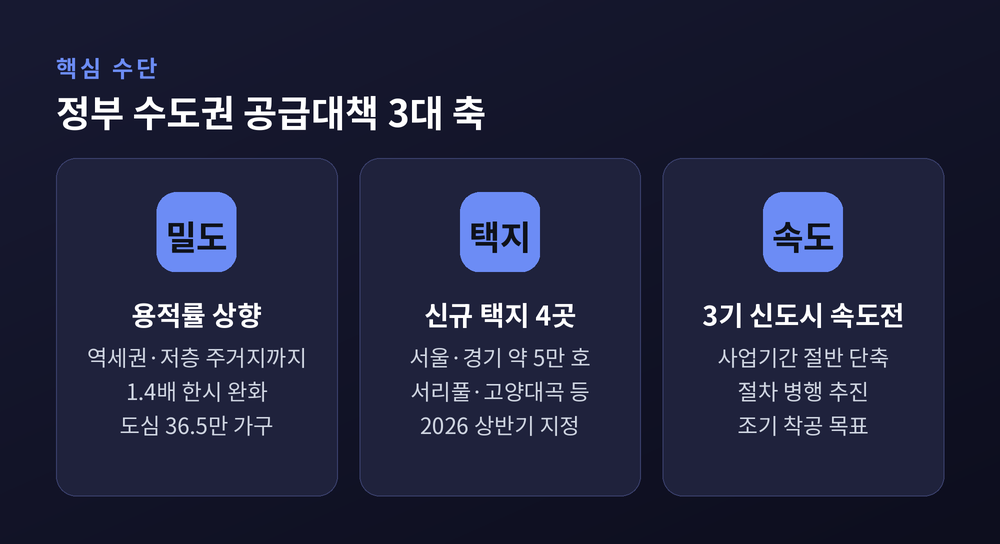
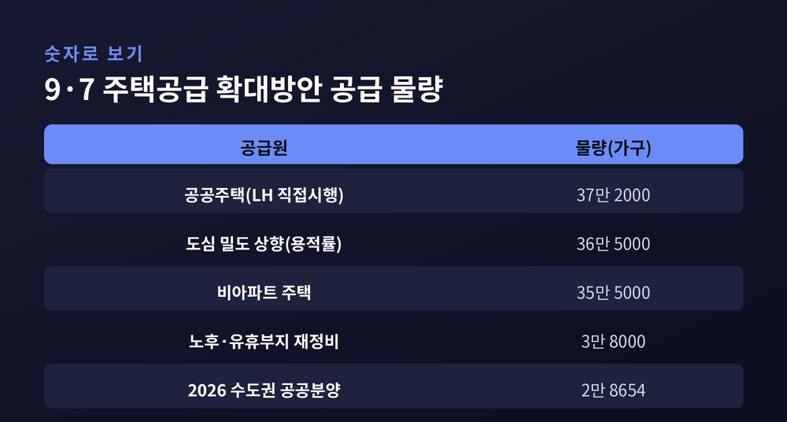
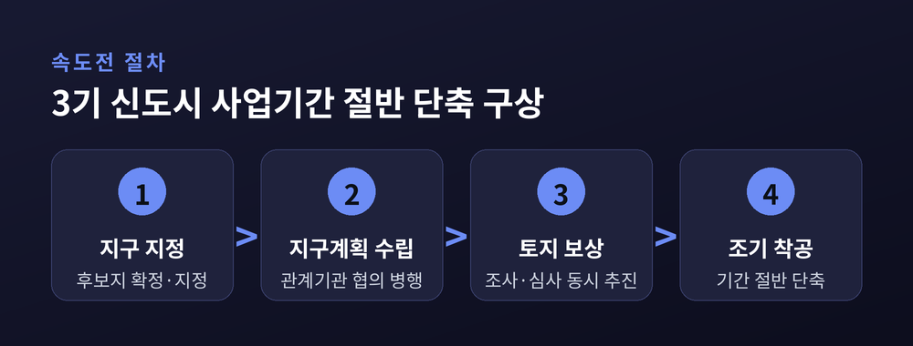
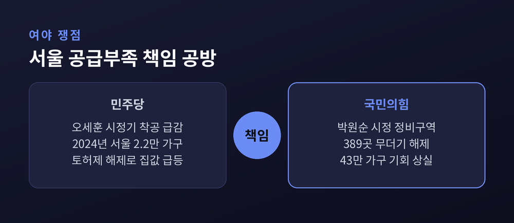

수도권 주택공급 대책, 3기 신도시 속도전·용적률 상향 쟁점 총정리
이번 글에서는 정부의 수도권 주택공급 대책을 '공급' 측면에서 정리해 보겠습니다.
세 줄로 먼저 요약하면 이렇습니다. 정부는 2030년까지 수도권에 135만 가구를 착공하겠다는 목표를 세웠습니다. 그 실행으로 3기 신도시 사업기간을 절반으로 줄이고, 용적률을 높이며, 신규 택지를 더하고 있습니다. 다만 물량과 속도를 놓고 여야, 그리고 시장과 전문가의 시각이 엇갈립니다.
무슨 일이 벌어지고 있나
출발점은 2025년 9월 7일 발표된 「주택공급 확대방안」입니다.
핵심은 하나로 요약됩니다. 2026년부터 2030년까지 수도권에 135만 가구, 연 27만 가구를 새로 착공한다는 것입니다.
정부는 '준공'이 아니라 '착공' 기준으로 관리하겠다고 밝혔습니다. 실제 첫 삽을 뜨는 속도로 성과를 따지겠다는 뜻입니다.
여기에 2026년 7월, 이재명 대통령이 속도전을 주문했습니다. 3기 신도시의 사업기간을 기존 60개월 이상에서 30개월 수준으로 절반가량 줄이라는 지시였습니다. 7월 23일에는 헬기로 택지 후보지를 직접 살폈습니다.
방식은 절차의 병행입니다. 예전엔 지구 지정, 지구계획 수립, 관계기관 협의, 토지보상을 하나씩 순서대로 밟았습니다. 지금은 이 과정을 동시에 진행해 착공 시점을 앞당기겠다는 구상입니다.
3기 신도시는 2018년 문재인 정부의 수도권 30만 가구 계획에서 출발한 공공택지 사업입니다. 남양주 왕숙, 하남 교산, 인천 계양, 고양 창릉, 부천 대장 등 여덟 곳에 약 32만8000가구가 조성됩니다. 규모는 크지만, 지정 이후 여러 해가 지나도록 상당수가 아직 착공에 이르지 못했습니다. 속도전이 나온 배경입니다.

왜 지금 중요한가
배경에는 '공급 절벽' 우려가 있습니다.
서울 아파트 착공은 최근 10년 평균이 약 4만 가구였습니다. 그러나 2023년 2만7000가구, 2024년 2만2000가구로 내려앉았습니다.
전체 주택 착공 물량도 3년 전과 비교해 65% 급감했다는 것이 민주당 측 주장입니다. 지금의 전월세난과 가격 불안이 이 시기에서 비롯됐다고 봅니다.
공급이 줄면 몇 해 뒤 입주 물량이 마릅니다. 집을 구하는 사람에게는 곧 현실이 되는 문제입니다. 착공에서 입주까지 통상 서너 해가 걸리기 때문입니다. 그래서 정부는 새 택지를 찾는 것 못지않게, 이미 지정된 땅의 밀도를 높이는 쪽에 힘을 싣고 있습니다. 빈 땅을 새로 발굴하는 것보다, 지정된 택지의 용적률을 올리고 절차를 앞당기는 편이 공급 시기를 당기는 데 효과적이라는 판단입니다.
정책 수단 세 가지 — 용적률·택지·속도
대책의 뼈대를 수치로 보면 아래와 같습니다.

첫째는 용적률 상향입니다. 3년간 한시적으로 용적률을 1.4배 완화하는 규정을 기존 '역세권'에서 '역세권과 저층 주거지'까지 넓혔습니다. 도심 밀도를 높여 36만5000가구를 확보한다는 계획입니다.
둘째는 신규 택지입니다. 국토교통부는 네 곳에서 서울·경기 약 5만 호를 추가로 마련하기로 했습니다. 서리풀 약 2만 호, 고양 대곡 약 9000호 등이 대표적입니다. 서리풀1지구는 지구 지정을 먼저 마치고 속도전에 들어갔습니다. 지구 지정은 2026년 상반기, 첫 분양은 2029년, 첫 입주는 2031년이 목표입니다. 고양 대곡역 일대에는 복합환승센터가, 일부 택지에는 GTX-C 같은 광역철도 연계가 함께 검토됩니다.
셋째는 3기 신도시 속도전입니다. 여덟 곳의 약 32만8000가구를 예정보다 앞당겨 공급하겠다는 것입니다. 인천 계양은 2026년 첫 입주(1300호)를 앞두고 있어, 3기 신도시 가운데 가장 먼저 체감 물량이 나옵니다.
2026년 한 해만 놓고 보면, 수도권 공공분양은 2만8654가구로 잡혀 있습니다. 2025년의 2만2000가구보다 32.2% 늘어난 규모입니다. 공공택지 착공 목표는 5만 호 이상입니다. 상반기에는 남양주 왕숙2와 성남 낙생, 하반기에는 고양 창릉과 고덕강일3 등에서 분양이 이어질 예정입니다. 정부는 이를 두고 "판교급 신도시 하나를 새로 짓는 수준"이라 설명합니다.

쟁점 — 책임 공방과 실현 가능성
정치권의 시선은 팽팽하게 갈립니다.
2026년 8월 8일, 여야는 서울 공급 부족의 책임을 놓고 정면으로 부딪혔습니다.
민주당은 오세훈 서울시장 재임기의 착공 급감과 토지거래허가구역 해제를 원인으로 지목했습니다. 반대로 국민의힘은 박원순 전 시장 시절 정비구역 389곳 해제로 43만 가구의 공급 기회가 사라졌다고 맞섰습니다. 현 정부의 대출·세제 규제가 시장을 흔들었다는 비판도 함께 내놨습니다.

목표의 실현 가능성을 두고도 평가가 엇갈립니다. 정부는 착공 기준 관리로 체감도를 높일 수 있다고 봅니다. 반면 야당 일각에서는 135만 호를 "보여주기식"이라 부르며, 물량뿐 아니라 착공과 입주 시점까지 함께 따져야 한다고 지적합니다.
해법을 보는 결도 다양합니다. 여당 안에서는 정비사업을 살리기 위해 이주비 대출 규제를 풀자는 목소리가 나왔습니다. 조국혁신당의 차규근 최고위원은 공급을 총괄할 사령탑으로 '주택부' 신설을 제안했습니다. 같은 당 황현선 최고위원은 물량뿐 아니라 착공과 입주 시점을 함께 관리해야 한다고 짚었습니다. 전문가들은 재건축·재개발 촉진을 위한 제도적 지원을 최우선 과제로 꼽습니다.
이 부분은 어느 한쪽이 옳다고 단정하기 어렵습니다. 통계의 기준 시점과 해석에 따라 그림이 달라지기 때문입니다.
남은 변수와 전망
속도전에는 현실의 벽이 있습니다.
가장 큰 난관은 토지보상입니다. 3기 신도시는 당초 입주 시점이 이미 지났고, 보상 협의 지연과 공사비 상승이 사업성을 눌러 왔습니다. '보상 전쟁'이라는 표현이 나오는 이유입니다.
절차를 병행하면 시간은 줄지만, 협의와 검토가 촘촘하지 못하면 갈등이 뒤로 미뤄질 수 있습니다. 보상 단가와 원주민 이주를 둘러싼 마찰은 예산과 일정에 그대로 영향을 줍니다. 물량 목표가 실제 입주로 이어지기까지는 몇 해가 더 필요합니다.
그럼에도 방향 자체는 분명합니다. 공급을 늘리고 시점을 앞당기겠다는 목표에는 여야의 큰 틀이 크게 다르지 않습니다. 다투는 지점은 '누구의 책임인가'와 '어떤 속도로, 어떤 방식으로'에 있습니다. 정비사업 규제를 얼마나 풀지, 공공과 민간의 역할을 어떻게 나눌지가 이어질 논의의 축이 될 것입니다.
정리하면 이렇습니다.
정부의 수도권 공급 대책은 '용적률을 높이고, 택지를 더하고, 속도를 당기는' 세 축으로 움직입니다. 숫자는 크지만, 그 숫자가 열쇠를 손에 쥔 실입주로 이어질지가 관건입니다.
결국 남는 질문은 하나입니다. "얼마나 짓겠다"가 아니라 "언제 살 수 있는가"입니다.
지표가 아니라 체감으로 답이 나오는 날, 이 논쟁도 비로소 정리될 것입니다.